Code 14 -- Barlines, Braces, Brackets -- parameter structure |
P1 code number (14)
P2 staff number
P3 horizontal position
P4 number of staves connected by the barline
P8 partial bracket (P5 = 9), size of dash (P5 = 7)
P9 size of space in dashed barlines (P5 = 7)
P10 partial barlines - bottom origin
P11 partial barlines - top extent
P12 sets size of dots with repeat bars
P13 space between double or repeat bars
P14 space between dots and lines of repeat bars
P15
. . . .
P16 vertical positions of repeat dots
P17 special double bar spacings
P18 sets gap in bar
P25
P26
P4 number of staves connected by the barline
All Code 14 items are generated from a given staff number (P2) upward.
P4 indicates how many staves are to be covered.
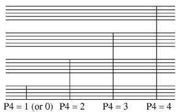
If P4 = 999, the bar will extend to the highest staff found.
If P4 is negative, the barline will be invisible when printing. However, for reference, a dotted barline will appear on the screen. The Lineup and Justify commands will treat this as a normal line. This may be useful in situations involving unusual barring.
P5 type of barline
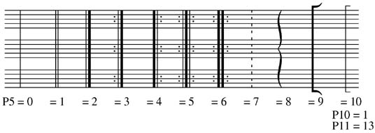
To get a barline combined with a two-bar repeat, set P5 to -44.
The following example presumes you have entered invisible whole-rests
in each of the empty bars. To add the number, set P8 to 2.
The barline, the repeat symbol and the number are saved as a single item.
See also Code 2, Rests.
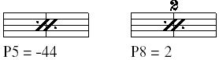
P6 thickness of barline
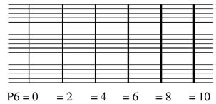
These different line thicknesses may not appear on your screen.
Check the printed output before making final decisions.
P6 can also control the width of the wavy brace.
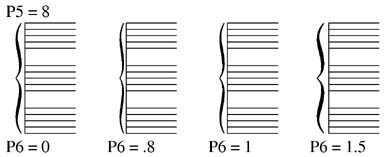
P7 horizontal displacement
P7 is primarily used to adjust the position of braces and brackets at the beginning of a system.
(All the P3 values should be the same for the Lineup and Justify commands to work properly.)
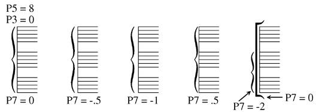
P8 size of dash (P5 = 7)
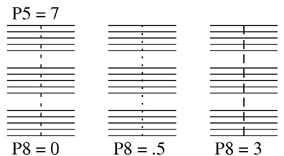
If P5 = 9, P8 is used to create partial brackets.
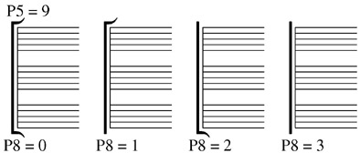
P9 size of space in dashed barlines (P5 = 7)
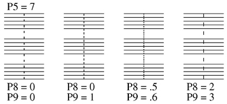
P10 partial barlines - bottom origin
P11 partial barlines - top extent
The values in P10 and P11 are in scale steps.
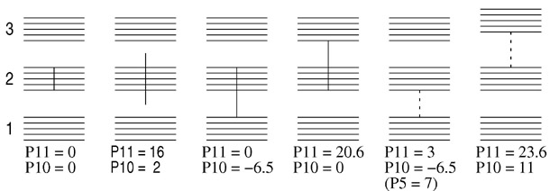
The spacing between the staves can vary greatly. Be careful to revise the
P10 and P11 values if any staves are moved up or down.
P12 can set the size of the dots with the repeat bar
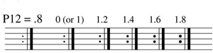
P13 sets the space between double or repeat bars
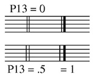
P14 sets the space between the dots and lines of repeat bars
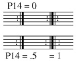
P16 sets the vertical positions of repeat dots
P16 = 0 (normal) puts dots in the second and third spaces of the staff.
These correspond to note levels 6 and 8.
P16 can be a 3-digit number, xyz, where x is the vertical position of
the lower dot and yz is the position of the upper dot.
P16 = 410 will put dots at note levels 4 and 10, etc.
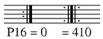
Repeat bars with 4 dots (sometimes found in early music) can be
created by combining 2 repeat bars.
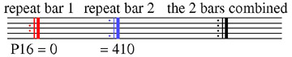
P17 sets the double bar spacing, overriding the applicable staff size.
In the example below, if P17 is set to 1, the double bar on staff 3
will appear with the same spacing as that attached to staff 1.
This may be useful in chamber music scores involving piano
and other instruments.
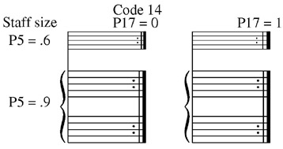
P18 sets the position of the center of a gap in the bar. This number is the percentage of the distance from the bottom. The number may be in decimal form , or as a percent. In the following, P18 could alternatively equal 40 and 57.
P19 sets the size of the gap in scale steps.
This feature is only available when P5 = 0 or 1.
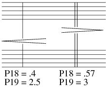
P25 layer number.
See Color Control.
P26 color/gray value.
See Color Control.
___________________________________________________________________
-------------- Shortcut Letter Commands for creating or editing
Barlines -----------------
BARn, where n indicates the number staves covered by the bar (no
space before number).
Note the following: BAR3 4 55 places a bar on staff 4, position 55, extending
through 3 staves.
This same format applies to all the "BAR" commands.
If this command is typed while in edit mode, any numbers beyond BARn will
be ignored.
In the examples below: D = double bar; H = heavy (or final) double bar;
L = repeat, dots to left; R = repeat, dots to right;
RD = double repeat; BK = bracket; BC = brace.
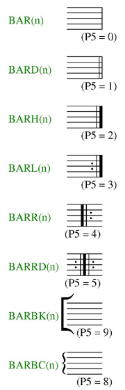
Function Key Setup for Code 14
| F1 Help
|
F2
|
F3 Forward to Next Item |
F4 Back to Previous Item, Same Code # |
F5 Forward to Next Item, Same Code # |
F6 . . . |
| F7 |
F8 Extend bar to highest staff (same as P4=999) |
F9 Exit from Edit Mode ( X ) |
F10 . . . |
F11 Delete, Move to Previous, Same Code # |
F12 Delete, Move to Next, Same Code # |